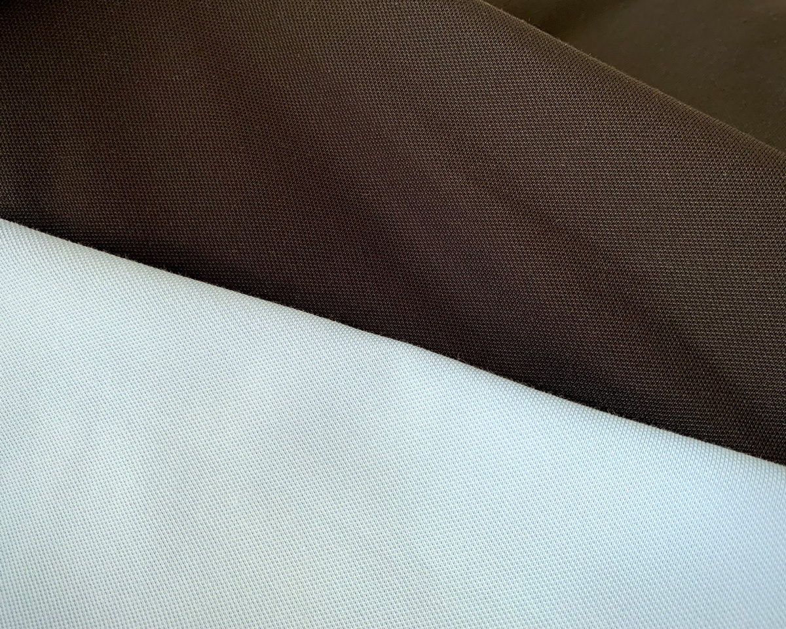
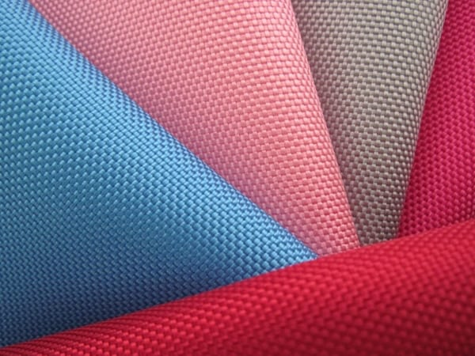
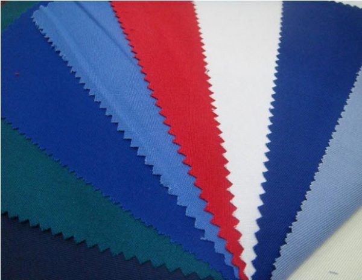
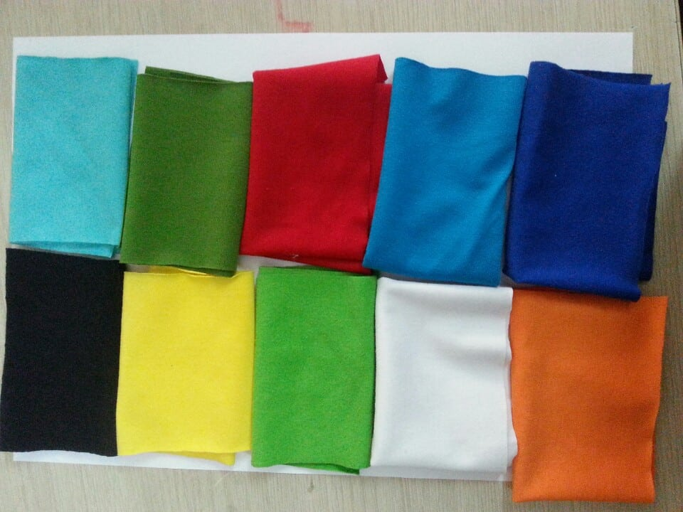

Các loại vải Printstyle chuyên sử dụng để sản xuất áo thun đồng phục cho hơn 500,000 khách hàng :
1. Vải Poly Premium CoolTech(Đồng phục cao cấp)
– Thông qua cách dệt sợi khác biệt so với các chất vải khác, Áo thun Poly Premium Cool Tech mới của Printstyle là bản nâng cấp đáng kể và tạo ra chất lượng cao cấp hoàn toàn, chất liệu mới này vừa mát, bền màu, sang trọng và chất lượng cao hơn đa số các dòng khác trên thị trường.
– Thành phần vải thun cá sấu Poly 4 chiều gồm 65% sợi cotton và 35% sợi Polyester. Những chiếc áo thun cá sấu có thành phần sợi Poly Premium Cool Tech vải thun dày, độ ma sát cao, chất liệu vải cao cấp và ít bị co bị nhàu khi sử dụng, thấm hút tốt độ bền màu cao. Công dụng: dùng may áo đồng phục cao cấp cho các doanh nghiệp, áo thể thao, áo thun cá sấu tốt nhất cho cả nam và nữ.
– Để nhận biết vải thun cá sấu Poly 4 chiều ta có thể dùng lực tay để kéo vải thun ra, nếu thun co giãn được theo bất cứ chiều nào thì đó gọi là thun 4 chiều.
– Độ bền cao trên 2 năm sử dụng, tạo cảm giác mát và thấm hút tốt khi dùng.
– Thường xuyên sử dụng làm đồng phục cao cấp cho các doanh nghiêp.
– Giá thành cao.
2. Vải Poly CoolTech(Đồng phục chất lượng)
Prinstyle chỉ sử dụng vải poly cooltech cao cấp(vải mềm, dầy hơn thông thường)
– Thành phần vải thun cá sấu Poly 4 chiều gồm 100% sợi Polyester, sợi này có tên gọi khác là sợi Nilon. Những chiếc áo thun cá sấu có thành phần sợi Poly, vải thun dày, độ ma sát cao, chất liệu vải đẹp và ít bị co bị nhàu khi sử dụng. Đây là chất liệu chất lượng khi làm áo vải thun cá sấu, dể nhuộm và ít bị nhăn nên cũng là một lựa chọn thường xuyên trong may mặc. Công dụng: dùng may áo đồng phục, áo thể thao, áo thun cá sấu cho cả nam và nữ.
– Để nhận biết vải thun cá sấu Poly 4 chiều ta có thể dùng lực tay để kéo vải thun ra, nếu thun co giãn được theo bất cứ chiều nào thì đó gọi là thun 4 chiều.
– Độ bền cao trên 2 năm sử dụng, tạo cảm giác mát và thấm hút (khác với vải ngoài thị trường do có thấm hút tạo cảm giác mát khi dùng).
– Thường xuyên sử dụng làm đồng phục cho các doanh nghiêp.
– Giá thành hợp lý.
3. Vải cotton 100% (Đồng phục cao cấp)
– Đặc tính: Sợi cotton có nguồn gốc từ sợi quả bông, chuyên sâu hơn gọi là sợi xenluloxo (sợi bông). Áo thun chất liệu cotton 100% có khả năng thấm hút mồ hôi cực tốt, thích hợp với khí hậu nhiệt đới của Việt Nam.
– Thun co giãn 4 chiều, vải mềm mại.
– Đồng phục cao cấp.
– Thường xuyên được sử dụng làm đồng phục.
– Giá thành cao.
4. Vải cotton 65% – Vải thun CVC( Đồng phục thông dụng)
– Thành phần bao gồm 65% xơ cotton & 35% xơ PE. Vải sợi pha này mang tính chất của cả hai loại sợi cấu thành nên nó là sợi cotton và PE, thấm hút tốt.
– Thun co giãn 4 chiều, vải mềm mại.
– Thường xuyên được sử dụng làm đồng phục.
– Đồng phục thông dụng.
– Giá thành hợp lý.
